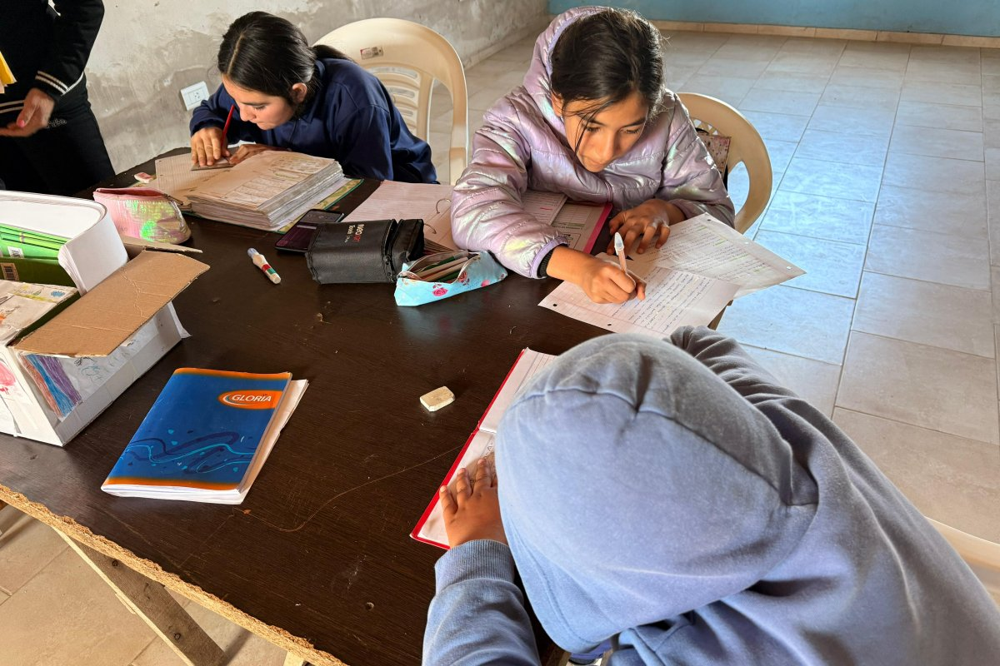

Acompañamiento escolar
Ayuda con tareas y contenidos




Tu tiempo puede cambiar una historia.
Quiero ser voluntarioMuchos chicos y adolescentes enfrentan barreras que ponen en riesgo su trayectoria educativa.
Niños y adolescentes en situación de pobreza
Estudiantes con inasistencia escolar en PBA
Jóvenes que no finalizan la secundaria
No alcanza el nivel básico de matemática
Alcanza el nivel esperado de lectura
Fuente: indicadores educativos y sociales de Argentina y Provincia de Buenos Aires.

Cuadernos Llenos es una organización social fundada en 2018 que trabaja para reducir el rezago educativo y prevenir el abandono escolar en niños y adolescentes de contextos vulnerables.
Creamos espacios gratuitos de apoyo escolar en distintos barrios del Conurbano Bonaerense (GBA) donde estudiantes pueden hacer tareas, resolver dudas y fortalecer hábitos de estudio junto a tutores y voluntarios comprometidos con la educación.
Creemos que aprender no debería depender del contexto económico, del acceso a un profesor particular o de tener un lugar silencioso para estudiar.
Nuestro objetivo es construir una red comunitaria que acompañe a cada estudiante para que pueda permanecer en la escuela y desarrollar su potencial.
Acompañamiento escolar
Ayuda con tareas y contenidos
Espacios Seguros
Bibliotecas, escuelas y centros comunitarios
Campañas solidarias
Recursos y voluntarios comprometidos con la educación
Estos números reflejan el alcance de la red comunitaria que hacemos posible cada día.
Municipios alcanzados
Puntos de encuentro activos
Tutores y voluntarios
Niños y adolescentes acompañados